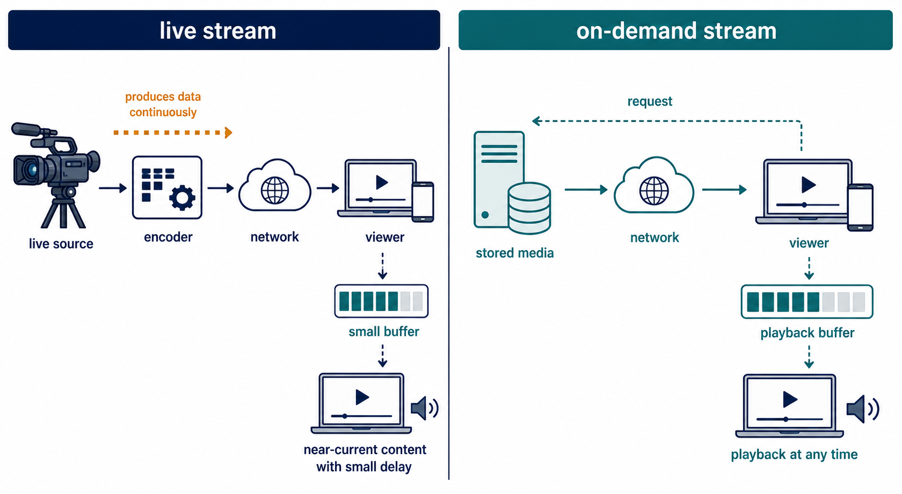

Streaming begins before the complete media file arrives
S2.12.A01S2.12.A02
Visual overview
Streaming starts playback before the complete file arrives

Visual transcript
- Live streaming delivers data close to the time it is produced.
- On-demand streaming delivers stored media when the user requests it.
- Both can use a playback buffer; neither requires the entire file before playback begins.
Core explanation
Bit streaming delivers an ordered flow of media data progressively so playback can begin before the complete file has arrived.
On-demand streaming sends stored content chosen by the user; the user controls when to begin. Real-time streaming sends content as it is produced, such as a live event, with minimal practical delay.
Both methods may use a buffer. ‘Real-time’ does not mean zero delay, and ‘on-demand’ does not require downloading the complete file first.